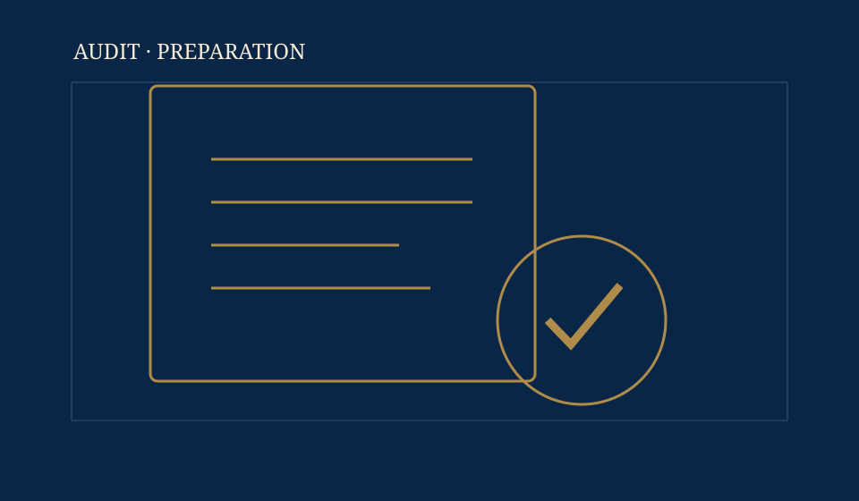
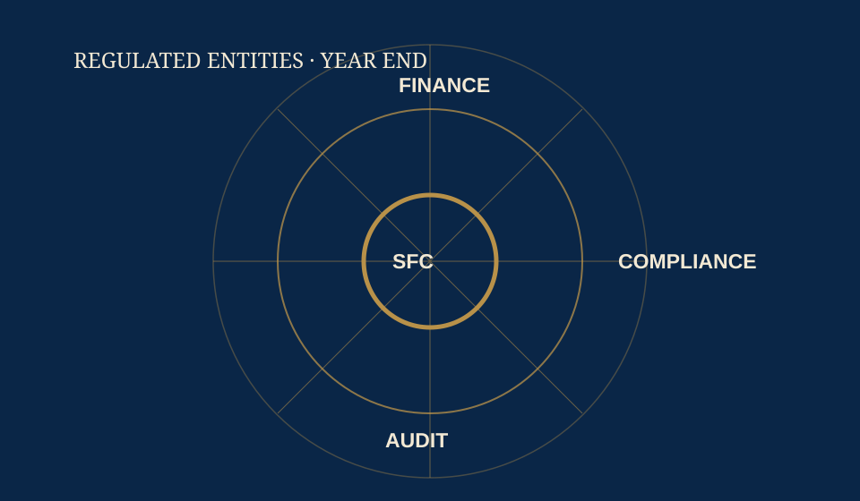

Direct partner involvement
合夥人直接參與
A responsible partner leads the engagement and remains reachable throughout.
每項委聘均由指定合夥人主理，並在整個過程中保持聯絡。
Hong Kong · Since 2004香港 · 2004年成立
Coordinated support for private companies, owner managed groups, overseas owned entities and SFC licensed corporations, including cross border business needs.
為私人企業、企業擁有人主理的集團、海外股東持有的公司及證監會持牌法團，提供協調一致的專業支援，包括跨境業務需要。
About the Firm關於事務所
Since 2004, we have combined direct partner involvement with the discipline and documentation expected of a professional practice.
自2004年起，我們將合夥人直接參與，與專業事務所應有的紀律及文件標準結合。
A responsible partner leads the engagement and remains reachable throughout.
每項委聘均由指定合夥人主理，並在整個過程中保持聯絡。
Audit, profits tax, accounting and corporate actions are considered together.
審計、利得稅、會計及公司行動一併考慮及協調。
Timelines, outstanding matters and recommended actions are recorded clearly.
時間表、未完成事項及建議行動均以書面清楚記錄。
Practice Areas服務範疇
Audit, tax, accounting and corporate matters are handled together, with one clear line of communication.
審計、稅務、會計及公司事務互相協調，並由同一溝通渠道跟進。
Statutory audit for Hong Kong companies, with practical handling of financial reporting, audit adjustments and tax-related audit matters.
為香港公司提供法定審計，並務實處理財務報告、審計調整及與稅務相關的審計事項。
Read more了解更多 → 02Profits tax filing, tax computations, IRD correspondence, objections, holdovers and provisional tax review.
利得稅申報、稅項計算、稅局函件往來、反對、緩繳及暫繳稅檢視。
Read more了解更多 → 03Management accounts, bank reconciliations, year-end closing and audit-ready accounting records.
管理賬目、銀行對賬、年結及達致審計水平的會計記錄。
Read more了解更多 → 04Annual returns, statutory registers, share transfers and changes in directors or shareholders.
周年申報、法定登記冊、股權轉讓及董事或股東變更。
Read more了解更多 → 05Practical accounting, tax and corporate advice on operations, restructuring, expansion and transactions.
就營運、重組、擴展及交易提供切實可行的會計、稅務及企業意見。
Read more了解更多 → 06Audit, accounting and FRR-related support for licensed corporations, asset managers and regulated entities.
為持牌法團、資產管理公司及受規管實體提供審計、會計及財政資源規則相關支援。
Read more了解更多 →Latest Insights最新專業資訊
Focused notes on audit preparation, tax correspondence and regulated entity reporting.
聚焦審計準備、稅務往來及受規管實體報告。
View all insights瀏覽全部專業資訊→
A concise checklist for closing the accounts, preparing schedules and keeping the audit timetable realistic.
就完成賬目、準備附表及訂立實際審計時間表提供精簡清單。
Read article閱讀文章 →
The first deadlines and documents to check before deciding on an objection, holdover or outstanding filing.
在考慮反對、暫緩繳稅或補交申報前，首先應核對的期限及文件。
Read article閱讀文章 →
A coordinated view of management accounts, audit schedules, financial resources and reporting deadlines.
協調管理賬目、審計附表、財政資源及報告期限的年結重點。
Read article閱讀文章 →Speak with the Practice與本所聯絡
Most new engagements begin with a short call. A partner or manager will respond directly. We aim to reply within one Hong Kong business day.
大多數新委聘均由一次簡短通話開始。合夥人或經理將直接回覆。我們以一個香港工作天內回覆為服務目標。